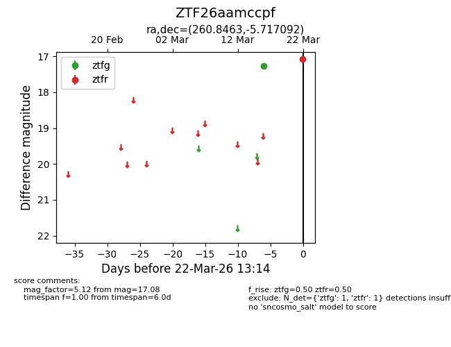
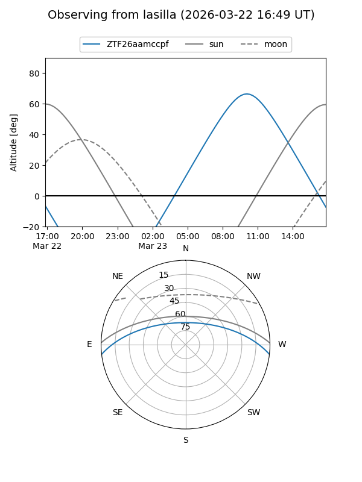
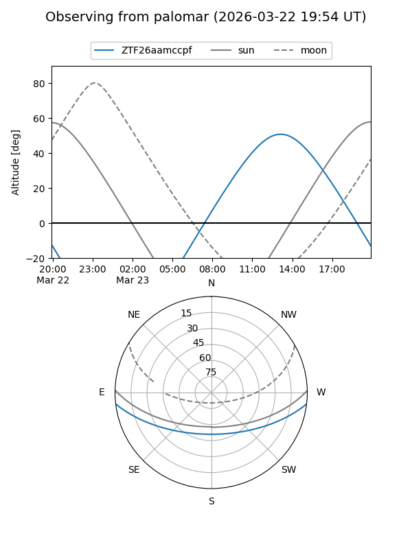
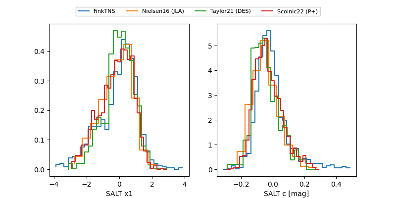

ZTF26aamccpf
Target ZTF26aamccpf at 2026-03-22 13:16
Aliases and brokers:
FINK: link
Lasair: link
ALeRCE: link
alt names
ZTF26aamccpf (ztf,fink_ztf)
Coordinates:
equatorial (ra, dec) = 260.8463,-5.71709
equatorial (HMS+DMS) = 17:23:23.12,-05:43:01.53
galactic (l, b) = (17.2653,+16.64865)
Flags:
Photometry:
last ztfg=17.26, ztfr=17.08
1 ztfg, 1 ztfr detections
Lightcurve

Visibility


Additional plots
